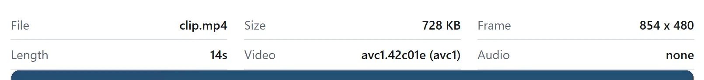
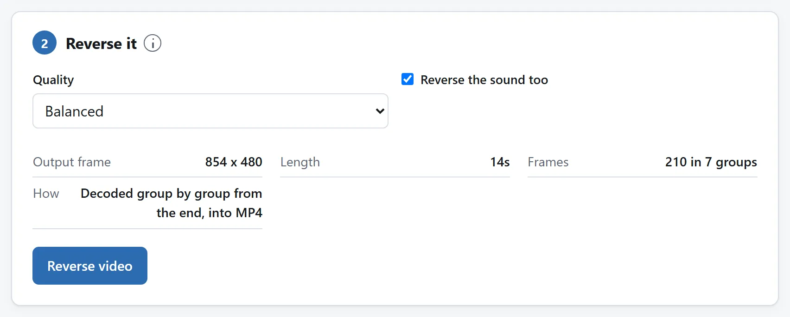

简短的回答
打开视频倒放，把片子拖进去，决定要不要连声音一起倒，然后导出。出来的还是同一个片子，只是最后一帧排在最前，长度和进去时一模一样。
和剪辑不同，这件事必须把每一帧都重新写一遍，声音也一样。这不是某个工具的短板，倒放本来就是这样。这一页剩下的部分讲的是为什么，以及这对你要等多久意味着什么。
不只做效果，也能看动作顺序
水花倒聚是常见效果，手工或运动倒放也可研究阶段。只留短动作，声音无用就去掉，对比正向原件。倒放能看位置次序，不能显示力、修复损坏或补相机没录的帧。
产品展示用固定视角，物体别出画。发布前看下载件头尾。要做往返，就用同一准备好的正向片做倒放，再按拼接流程让两半裁框和长度一致。
为什么视频不能直接反着播
一个视频文件不是一摞照片。大约每五十帧才有一帧是完整的画面，也就是关键帧，而它们之间的所有内容，说的都是相对周围的帧变了什么。一小时的视频能塞进一部手机里，靠的就是这个。
这也意味着解码器只能往前走。要给你看片子的最后一帧，它得先找到前面的那个关键帧，再把中间的全部解出来。你要倒数第二帧，它就把同样的活再干一遍。
所以倒放是一组一组做的：把一组正着解出来，把这些帧攥住，按相反的顺序交给编码器，再挪到前一组。那个显而易见的替代办法——把整个片子解成一张列表，再倒着走一遍—— 1080p 每帧要占约 3 MB 内存，也就是每分钟 5 GB，这也是为什么那样写的工具，碰上超过几秒的片子就趴下了。

声音会怎么样
倒放工具在这一点上差别最大，也正是这里值得你查一查，自己到底拿到了什么。
声音是按几十毫秒一个包压缩的，每个包都是相对前一个包编码出来的。把这些包倒着写出去，并不会让一条音轨倒过来放：它会让一小段一小段正着播，顺序却是乱的，听上去像结巴或者故障，不像倒放。把声音真正倒过来的唯一办法，是把整条音轨解码，把采样按相反顺序排好，再编码一遍。
这里做的就是这件事，也正因如此，声音会被重新编码，而视频剪辑和视频裁切从来不碰它：那两件活不改变事情什么时候发生，而这一件除此之外什么都不改。
如果你只要画面倒过来、完全不要声音——这也是发到默认静音播放的信息流里最常见的选择——就把那个勾去掉。这样更快，文件也更小。

画面要付的代价
一次重新编码。帧出来的顺序，是原文件里根本没有为之编码过的，所以每一帧都得重写。
一个规矩的工具不会做的，是花得比原片更多。倒过来的片子装的画面和进去时一模一样，码率再高也没有新东西可描述：只会把文件撑大，画面并不会更好看。这里的画质设置是在那条上限之下移动，而不是往上冲。
老规矩，有损的步骤会叠加。倒一个原片，是一代。把一段录屏下载下来、导出一遍、再拿去倒，那是四代，而且看得出来。
先剪，再倒
片段需要剪切和倒放时，先剪。合适的选段可以复制，不必解码；精确剪切会重新编码。剪后的文件可能带有倒放器不接受的播放编辑，必要时先在本地重新导出，应用这些编辑。去掉的每秒，都能减少后续解码和编码工作。
反过来做，等于在倒你马上就要丢掉的画面。片子一长，这就是几秒钟的活和好几分钟的活之间的差别。剪辑指南里说明了为什么那第一步可以完全不花你的画质。
裁切也按同样顺序：先剪短，再裁画面，最后倒放，让昂贵步骤只处理最短片段。这里裁切和倒放各会重新编码画面，两者合用就是两代画面，另加可能的精确剪切。
人们实际拿它做什么
- 倒带梗。某样东西掉了、碎了、溅出来了，倒一下就全回去了。它读起来像个笑话，是因为真实素材反着放太好认了：烟会聚拢，水会往上爬。
- 手工 boomerang。把一小段倒过来，再用视频剪辑接回原片，你就有了一个来回循环，不需要那个平常做这件事的应用，长度也由你说了算，而不是它。
- 反向揭晓。把收拾好的最终状态拍下来再倒过来，成品的一盘菜就变回了食材，装好的东西自己散开。这比正着拍容易，而这正是重点。
- 倒着说的话。不过这只有在声音真的被倒过来时才有意思——见上文。
格式，以及要多久
MP4、M4V 和 MOV 直接读，里面装什么都行——H.264、HEVC、AV1 或 VP9——只要你的浏览器能解那个编码。这是快的那条路：文件会一组一组帧地往回走，机器多快它就多快。
其他浏览器能播的东西，最典型的是 WebM，则是靠让浏览器自己的播放器在片子里一格一格地往回退来完成。能成，但慢，因为每一次这样的跳转都会让浏览器从前面的关键帧重新解码。页面会在你开始之前说明它走的是哪一条，以及为什么。
AVI、WMV、FLV 和大多数 MKV，浏览器既读不了也播不了，工具会带一句说明直接拒掉，而不是走到一半才失败。
不管走哪条路，这都是本站较慢的活之一，因为每一帧都要解码再编码，有些帧还不止解一次。短片子是几秒钟的事；长的 4K 片子，值得按下去之后就别管它。
为什么这件事不需要上传
在浏览器里解码和重新编码视频，是近些年才有的事，而且是真的：WebCodecs 暴露的正是你手机录像时用的那颗硬件编码器，它快也是同一个原因。活是在本来就有这个文件的机器上干的，而对一个大视频来说，这也是唯一说得通的安排：把它传上去、再把结果拉回来，花的时间比编码本身还多。
这里的工具没有任何形式的网络功能，页面的 Content-Security-Policy 里写着它允许联系的每一个地址，没有一个属于本站。你要是宁可自己查也不愿听我们说，拔掉网线，照样倒一个试试。
把文件传给在线转换器安全吗？那一页还给出了另外三条你可以拿去检验任何工具的办法。